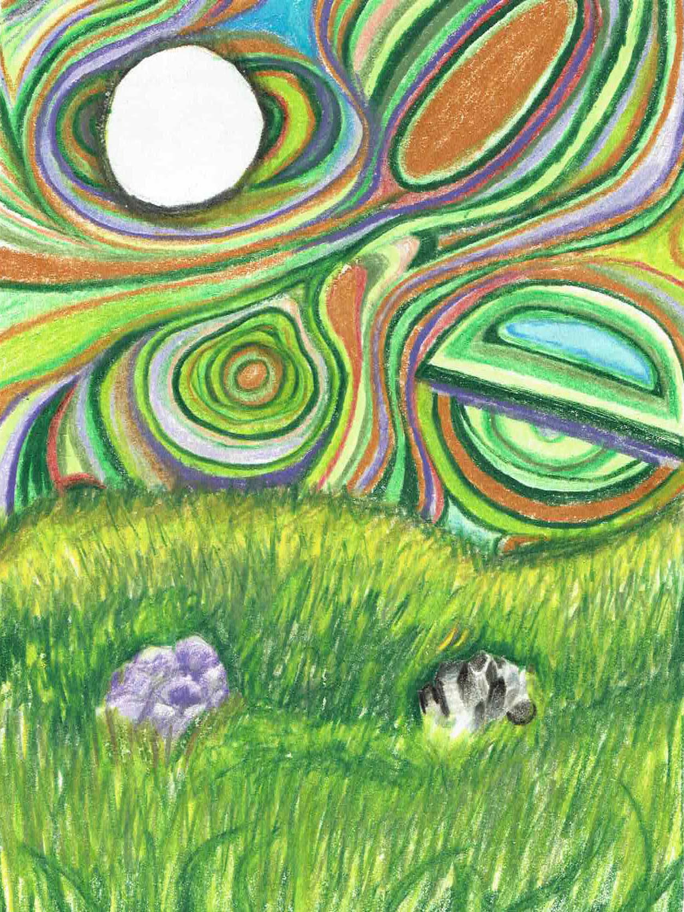

Artificial Meadow
About The Piece
Artificial Meadow transforms a tabletop arrangement of household objects into a surreal, storybook-like landscape. A fluffy scarf becomes wavy grass, inspired by the playful curves of Dr. Seuss illustrations, while sharp-edged crystals break the softness—adding contrast and texture to the scene.
Rendered in colored pencil, the piece blends saturated color and layered movement to blur the line between natural and artificial. The swirling sky and glowing terrain invite the viewer into a space where imagination reshapes the ordinary.
This drawing explores how perception shifts when we reimagine familiar materials—and how creating the scene itself can be just as meaningful as drawing it.